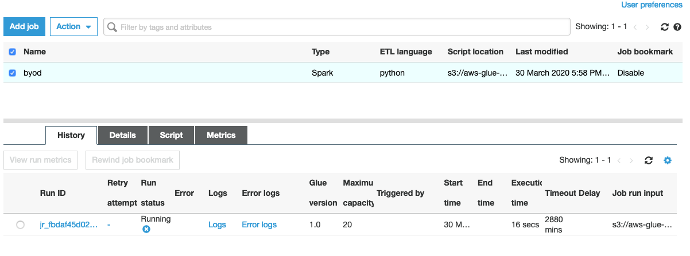

Transform the data to Parquet format
In the following section, we will create one job per each file to transform the data from csv, tsv, xls (typical input formats) to parquet.

We will place this data under the folder named “curated” in the data lake.
- In the Glue Console select the Jobs section in the left navigation panel’
- Click on the Add job button;
- specify a name (preferably byod-YOUR-TABLE-NAME-job) in the name field, then select the “glue-processor-role”;
- select Type: Spark
- make sure Glue version 2 is selected: “Spark 2.4, Python 3 with improved job startup times (Glue Version 2.0)” (If you want to read more about version 2: Glue version 2 announced)
- select the option “A new script to be authored by you";
- Provide a script name (preferably byod-YOUR-TABLE-NAME-job-script.py)
- Tick the checkbox for “Job Metrics", under Monitoring Options and DO NOT hit Next yet;
- Under “Security configuration, script libraries, and job parameters (optional)", check that Worker type is “Standard” and Maximum capacity is “10”. This determines the worker type and the number of processing units to be used for the job. Higher numbers result in faster processing times but may incur higher costs. Worker type and capacity should be determined according to data size, data type etc. (further info can be found in Glue documentation.) - hit Next
- click Next, then Save job and edit script. You will be redirected to script editor.
- Paste the following code to the editor. PLEASE UPDATE THE SCRIPT WITH YOUR INPUT AND OUTPUT FOLDER LOCATIONS.
This step needs to be done per each file you have.
import sys
import datetime
import re
from awsglue.transforms import *
from awsglue.utils import getResolvedOptions
from pyspark.context import SparkContext
from awsglue.context import GlueContext
from awsglue.job import Job
glueContext = GlueContext(SparkContext.getOrCreate())
job = Job(glueContext)
## DONT FORGET TO PUT IN YOUR INPUT AND OUTPUT LOCATIONS BELOW.
your_database_name = "YOUR-DATABASE-NAME"
your_table_name = "YOUR-TABLE-NAME"
output_location = "s3://YOUR-BUCKET-NAME/curated/YOUR-TABLE-NAME"
job.init("byod-workshop" + str(datetime.datetime.now().timestamp()))
#load our data from the catalog that we created with a crawler
dynamicF = glueContext.create_dynamic_frame.from_catalog(
database = your_database_name,
table_name = your_table_name,
transformation_ctx = "dynamicF")
# invalid characters in column names are replaced by _
df = dynamicF.toDF()
def canonical(x): return re.sub("[ ,;{}()\n\t=]+", '_', x.lower())
renamed_cols = [canonical(c) for c in df.columns]
df = df.toDF(*renamed_cols)
# write our dataframe in parquet format to an output s3 bucket
df.write.mode("overwrite").format("parquet").save(output_location)
job.commit()
Notice that we have a section in this script where we are replacing invalid characters that you may have in your column headers. Spark doesn’t accept certain characters in field names including spaces.
Click * Save, then Run Job
Check the status of the job by selecting the job and go to history tab in the lower panel. In order to continue we need to wait until this job is done, this can take around 5 minutes (and up to 10 minutes to start), depending on the size of your dataset.

To make sure the job transformed the data:
- Open your S3 console (https://s3.console.aws.amazon.com/)
- Select the bucket you are using for this workshop
- You should see a new sub-folder called “curated” filled with parqut files. You might need to refresh this page from the top-right corner of the page.
You will need to create a similar job for each table you have.